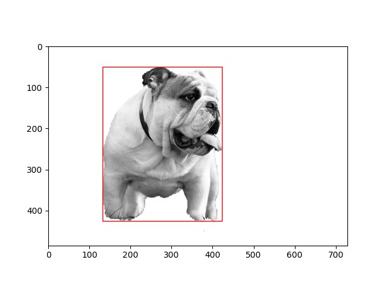

Dog Recognition Algorithm
November 2022 - December 2022



Technologies Used
Summary
Developed a dog recognition algorithm that detects dogs in images during my AI Robotics course. The algorithm separates the foreground from the background, applies binary thresholding to convert pixel values to a range of 0 to 255 (black and white), and computes a bounding box when the number of white pixels falls within a certain range.
Goals
- Recognize and compute bounding boxes of dogs for different image sizes, formats, and layouts.
- Have an accuracy rate of 95% when detecting dogs in each image supplied.
- Be able to run the algorithm on a large dog dataset.
Constraints
- Limited to images that only have one dog breed for each image

{kind=link}
Challenges
- Determining the optimal pixel density to compute the bounding box after applying binary thresholding. Having a low value increases the background noise in the image.
Tags
- #Artificial Intelligence
- #Computer Vision
- #Image Recognition
- #Python
- #OpenCV
- #Numpy
- #MediaPipe
- #Matplotlib
The use of programming languages, organizational, and technology logos on this site is solely for demonstrating the relevant technologies and complies with the respective brand guidelines. The organizations referenced do not affiliate with, sponsor, or endorse any content, project, or application on this site.